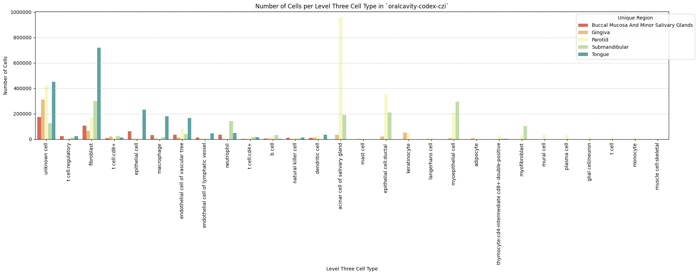

import numpy as np
import pandas as pd
import os
import json
import requests
import shutil
import matplotlib.pyplot as plt
import seaborn as sns
from sklearn.preprocessing import normalize
import plotly.express as px
from _cde_compute_edges_from_nodes import *
pd.set_option('display.max_columns', None)
pd.set_option('display.max_rows', None)
# suppress warnings
import warnings
warnings.filterwarnings("ignore")Distance Analysis: oralcavity-codex-czi
Analyze and visualize cell-to-nearest-endothelial-cell distance distributions for the
oralcavity-codex-czi dataset.
basepath = "/u/yashjain/hra-cell-distance-analysis/data"
dataset_dir = "oralcavity-codex-czi"
data_filedir = os.path.join("data-processed-nodes-with-harmonized-cell-types", dataset_dir)
output_edge_dir = os.path.join("data-processed-edges", dataset_dir)
figures_output_dir = "generated-figures"# Function to load your data
def load_data(path, edges=False):
if edges:
column_names = ['cell_id', 'x1', 'y1', 'z1', 'x2', 'y2', 'z2']
data = pd.read_csv(path, header=None, names=column_names)
else:
data = pd.read_csv(path)
return data# Function to read all files ending with "-nodes.csv" in the `data_filedir` directory into a single DataFrame.
# Another additional column `Dataset` is added to identify the dataset name which comes from the filename before the `-nodes.csv` suffix.
# Additionally, function reads all files ending with "-edges.csv" in the `output_edge_dir` directory into a single DataFrame.
# Three additional columns are added "Dataset", "Anchor Cell Type", and "Anchor Cell Type Level" to identify the dataset name, anchor cell type, and anchor cell type level respectively which come from the filename before the `.csv` suffix.
# The three additional columns are created by splitting the filename on the `-` character, and extracting the relevant parts.
# On splitting, the first part is the dataset name, second part is the anchor cell type level, and third part is the anchor cell type, and last part is the `edges` suffix.
# When reading files, check if the file has the correct format (i.e., ends with `-edges.csv`).
# Additionally, the function merges the edges DataFrame with the nodes DataFrame to get the cell type information for the anchor cells.
# This is done by reading the corresponding nodes file from the `data_filedir` directory for each edges file, and merging it with the edges DataFrame on the `cell_id` column.
# The merged DataFrame contains the edges with additional columns for the cell type information.
# The function returns three DataFrames:
# 1. `merged_nodes`: DataFrame containing all nodes with an additional column `Dataset`.
# 2. `merged_edges`: DataFrame containing all edges with additional columns `Dataset`, `Anchor Cell Type`, and `Anchor Cell Type Level`.
# 3. `merged_nodes_for_all_edges`: DataFrame containing all edges with additional columns `Dataset`, `Anchor Cell Type`, `Anchor Cell Type Level`, and the cell type information for cells.
def read_all_edge_datasets(basepath, data_filedir, output_edge_dir):
all_nodes_files = []
all_edges_files = []
all_nodes_edges_files = []
for file in os.listdir(os.path.join(basepath, output_edge_dir)):
if file.endswith("-edges.csv"):
file_path = os.path.join(basepath, output_edge_dir, file)
dataset_name, anchor_cell_type_level, anchor_cell_type = file.replace("-edges.csv", "").split('-')
edges_df = load_data(file_path, edges=False)
edges_df['Dataset'] = dataset_name
edges_df['Anchor Cell Type'] = anchor_cell_type
edges_df['Anchor Cell Type Level'] = anchor_cell_type_level
edges_df.rename(columns={"distance": "Distance"}, inplace=True) # Rename column "distance" to "Distance".
all_edges_files.append(edges_df)
# Read the corresponding nodes file from data_filedir to get the cell type information
nodes_file_path = os.path.join(basepath, data_filedir, f"{dataset_name}-nodes.csv")
nodes_df = load_data(nodes_file_path)
nodes_df['Dataset'] = dataset_name
all_nodes_files.append(nodes_df)
# Add a new 'cell_id' column to nodes_df
nodes_df['cell_id'] = range(len(nodes_df))
# Set 'cell_id' column as index for nodes_df
nodes_df.set_index('cell_id', inplace=True)
# Merge edges_df with nodes_df to get the cell type information for the anchor cells
edges_nodes_df = pd.merge(edges_df, nodes_df[['Level Three Cell Type', 'Level Two Cell Type', 'Level One Cell Type']], how='left', left_on='cell_id', right_index=True)
all_nodes_edges_files.append(edges_nodes_df)
merged_edges = pd.concat(all_edges_files, ignore_index=True)
merged_nodes = pd.concat(all_nodes_files, ignore_index=True)
merged_nodes_for_all_edges = pd.concat(all_nodes_edges_files, ignore_index=True)
return merged_nodes, merged_edges, merged_nodes_for_all_edgesdef create_directory(directory):
if not os.path.exists(directory):
os.makedirs(directory)
print(f"Directory '{directory}' created successfully.")
else:
print(f"Directory '{directory}' already exists.")Get initial statistics and identify endothelial cell categories for dataset.
df_all_nodes, df_all_edges, df_all_edges_with_cell_types = read_all_edge_datasets(basepath, data_filedir, output_edge_dir)df_all_nodes.head(5)| x | y | Original Cell Type | Level Three Cell Type | Level Three CL Label | Level Three CL ID | CL_Match/3 | Level Two Cell Type | Level Two CL Label | Level Two CL ID | CL_Match/2 | Level One Cell Type | Level One CL Label | Level One CL ID | CL_Match/1 | Dataset | |
|---|---|---|---|---|---|---|---|---|---|---|---|---|---|---|---|---|
| 0 | 2466.85 | 580.95 | Others | unknown cell | cell:unknown | CL:0000000 | skos:narrowMatch | unknown cell | cell:unknown | CL:0000000 | skos:narrowMatch | unknown cell | cell:unknown | CL:0000000 | skos:narrowMatch | Buccal_Mucosa_And_Minor_Salivary_Glands_1 |
| 1 | 2421.30 | 629.05 | Others | unknown cell | cell:unknown | CL:0000000 | skos:narrowMatch | unknown cell | cell:unknown | CL:0000000 | skos:narrowMatch | unknown cell | cell:unknown | CL:0000000 | skos:narrowMatch | Buccal_Mucosa_And_Minor_Salivary_Glands_1 |
| 2 | 2459.00 | 681.80 | Others | unknown cell | cell:unknown | CL:0000000 | skos:narrowMatch | unknown cell | cell:unknown | CL:0000000 | skos:narrowMatch | unknown cell | cell:unknown | CL:0000000 | skos:narrowMatch | Buccal_Mucosa_And_Minor_Salivary_Glands_1 |
| 3 | 2418.20 | 700.00 | Others | unknown cell | cell:unknown | CL:0000000 | skos:narrowMatch | unknown cell | cell:unknown | CL:0000000 | skos:narrowMatch | unknown cell | cell:unknown | CL:0000000 | skos:narrowMatch | Buccal_Mucosa_And_Minor_Salivary_Glands_1 |
| 4 | 2444.70 | 768.30 | Treg | t cell:regulatory | regulatory T cell | CL:0000815 | skos:exactMatch | t cell | T cell | CL:0000084 | skos:exactMatch | immune cell | leukocyte | CL:0000738 | skos:exactMatch | Buccal_Mucosa_And_Minor_Salivary_Glands_1 |
# Print the total number of unique cell types per dataset. Compute separately for each cell type column (Level One Cell Type, Level Two Cell Type, Level Three Cell Type, Original Cell Type).
print("Total number of unique cell types per cell type annnotation level:")
unique_cell_types = {
'Original Cell Type': df_all_nodes['Original Cell Type'].nunique(),
'Level Three Cell Type': df_all_nodes['Level Three Cell Type'].nunique(),
'Level Two Cell Type': df_all_nodes['Level Two Cell Type'].nunique(),
'Level One Cell Type': df_all_nodes['Level One Cell Type'].nunique()
}
for cell_type, count in unique_cell_types.items():
print(f"{cell_type}: {count}")Total number of unique cell types per cell type annnotation level:
Original Cell Type: 39
Level Three Cell Type: 28
Level Two Cell Type: 20
Level One Cell Type: 6# Save the unique cell types containing "endothelial" in name per cell type column (Level One Cell Type, Level Two Cell Type, Level Three Cell Type, Original Cell Type) to a dictionary where the key is the level and the value is a list of unique cell types.
endothelial_cell_types = {
'Original Cell Type': df_all_nodes[df_all_nodes['Original Cell Type'].str.contains("endothelial", case=False, na=False)]['Original Cell Type'].unique().tolist(),
'Level Three Cell Type': df_all_nodes[df_all_nodes['Level Three Cell Type'].str.contains("endothelial", case=False, na=False)]['Level Three Cell Type'].unique().tolist(),
'Level Two Cell Type': df_all_nodes[df_all_nodes['Level Two Cell Type'].str.contains("endothelial", case=False, na=False)]['Level Two Cell Type'].unique().tolist(),
'Level One Cell Type': df_all_nodes[df_all_nodes['Level One Cell Type'].str.contains("endothelial", case=False, na=False)]['Level One Cell Type'].unique().tolist()
}
print("\nEndothelial cell types per cell type annotation level:")
for level, cell_types in endothelial_cell_types.items():
print(f"\n{level}:")
for cell in cell_types:
print(f" - {cell}")
Endothelial cell types per cell type annotation level:
Original Cell Type:
- Vascular Endothelial Cells
- Lymphatic Endothelial Cells
Level Three Cell Type:
- endothelial cell of vascular tree
- endothelial cell of lymphatic vessel
Level Two Cell Type:
- endothelial cell of vascular tree
- endothelial cell of lymphatic vessel
Level One Cell Type:
- endothelial celltype_field_list = ["Level Three Cell Type", "Level Two Cell Type", "Level One Cell Type"] # Skipping Original Cell Type as it is not a hierarchical level.
# Define the anchor cell type (type of endothelial cell) for each level in type_field_list based on available categories in the previous cell. The distance analysis at all three levels will be limited to the specified anchor cell type.
anchor_cell_type_dict = {
'Level Three Cell Type': 'endothelial cell of vascular tree',
'Level Two Cell Type': 'endothelial cell of vascular tree',
'Level One Cell Type': 'endothelial cell'
}Process datasets to add region information to Nodes files.
# Create a dictionary to map oral cavity regions to correct region names.
region_map = {'Buccal_Mucosa_And_Minor_Salivary_Glands_1':'Buccal Mucosa And Minor Salivary Glands',
'Buccal_Mucosa_And_Minor_Salivary_Glands_2':'Buccal Mucosa And Minor Salivary Glands',
'Gingiva_ID1_shiny':'Gingiva',
'Gingiva_ID5_shiny':'Gingiva',
'Parotid_1':'Parotid',
'Parotid_2':'Parotid',
'Parotid_3':'Parotid',
'Parotid_4':'Parotid',
'Submandibular_1':'Submandibular',
'Submandibular_2':'Submandibular',
'Tongue_3':'Tongue',
'Tongue__1':'Tongue',
'Tongue__2':'Tongue'
}df_all_nodes.head()| x | y | Original Cell Type | Level Three Cell Type | Level Three CL Label | Level Three CL ID | CL_Match/3 | Level Two Cell Type | Level Two CL Label | Level Two CL ID | CL_Match/2 | Level One Cell Type | Level One CL Label | Level One CL ID | CL_Match/1 | Dataset | |
|---|---|---|---|---|---|---|---|---|---|---|---|---|---|---|---|---|
| 0 | 2466.85 | 580.95 | Others | unknown cell | cell:unknown | CL:0000000 | skos:narrowMatch | unknown cell | cell:unknown | CL:0000000 | skos:narrowMatch | unknown cell | cell:unknown | CL:0000000 | skos:narrowMatch | Buccal_Mucosa_And_Minor_Salivary_Glands_1 |
| 1 | 2421.30 | 629.05 | Others | unknown cell | cell:unknown | CL:0000000 | skos:narrowMatch | unknown cell | cell:unknown | CL:0000000 | skos:narrowMatch | unknown cell | cell:unknown | CL:0000000 | skos:narrowMatch | Buccal_Mucosa_And_Minor_Salivary_Glands_1 |
| 2 | 2459.00 | 681.80 | Others | unknown cell | cell:unknown | CL:0000000 | skos:narrowMatch | unknown cell | cell:unknown | CL:0000000 | skos:narrowMatch | unknown cell | cell:unknown | CL:0000000 | skos:narrowMatch | Buccal_Mucosa_And_Minor_Salivary_Glands_1 |
| 3 | 2418.20 | 700.00 | Others | unknown cell | cell:unknown | CL:0000000 | skos:narrowMatch | unknown cell | cell:unknown | CL:0000000 | skos:narrowMatch | unknown cell | cell:unknown | CL:0000000 | skos:narrowMatch | Buccal_Mucosa_And_Minor_Salivary_Glands_1 |
| 4 | 2444.70 | 768.30 | Treg | t cell:regulatory | regulatory T cell | CL:0000815 | skos:exactMatch | t cell | T cell | CL:0000084 | skos:exactMatch | immune cell | leukocyte | CL:0000738 | skos:exactMatch | Buccal_Mucosa_And_Minor_Salivary_Glands_1 |
# Iterate through the df_all_data dataframe to create new column "Unique Region" based on the "Dataset" column.
# The "Unique Region" column is created by mapping the region names based on the full dataset name.
df_all_nodes['Unique Region'] = df_all_nodes['Dataset'].map(region_map)
# df_all_nodes['Unique Region'] = df_all_nodes['Dataset'].str.split('-').str[1].map(region_map)
# Check if the new columns are created correctly.
df_all_nodes[['Dataset', 'Unique Region']].head(5)| Dataset | Unique Region | |
|---|---|---|
| 0 | Buccal_Mucosa_And_Minor_Salivary_Glands_1 | Buccal Mucosa And Minor Salivary Glands |
| 1 | Buccal_Mucosa_And_Minor_Salivary_Glands_1 | Buccal Mucosa And Minor Salivary Glands |
| 2 | Buccal_Mucosa_And_Minor_Salivary_Glands_1 | Buccal Mucosa And Minor Salivary Glands |
| 3 | Buccal_Mucosa_And_Minor_Salivary_Glands_1 | Buccal Mucosa And Minor Salivary Glands |
| 4 | Buccal_Mucosa_And_Minor_Salivary_Glands_1 | Buccal Mucosa And Minor Salivary Glands |
# Print all unique regions in the data.
print("\nUnique Regions in the data:")
print(df_all_nodes['Unique Region'].unique())
# Print the total number of unique regions.
print(f"Total number of unique regions: {df_all_nodes['Unique Region'].nunique()}")
# Print number of unique datasets per unique region.
print("\nNumber of unique datasets per unique region:")
for region in df_all_nodes['Unique Region'].unique():
num_datasets = df_all_nodes[df_all_nodes['Unique Region'] == region]['Dataset'].nunique()
print(f"{region}: {num_datasets}")
Unique Regions in the data:
['Buccal Mucosa And Minor Salivary Glands' 'Gingiva' 'Parotid'
'Submandibular' 'Tongue']
Total number of unique regions: 5
Number of unique datasets per unique region:
Buccal Mucosa And Minor Salivary Glands: 2
Gingiva: 2
Parotid: 4
Submandibular: 2
Tongue: 3Process datasets to add region information to Edges files.
df_all_edges.head(5)| cell_id | x1 | y1 | z1 | x2 | y2 | z2 | Distance | Dataset | Anchor Cell Type | Anchor Cell Type Level | |
|---|---|---|---|---|---|---|---|---|---|---|---|
| 0 | 0 | 2466.85 | 580.950 | 0 | 2600.55 | 598.700 | 0 | 134.873098 | Buccal_Mucosa_And_Minor_Salivary_Glands_1 | endothelial cell of vascular tree | Level Three Cell Type |
| 1 | 759 | 2595.45 | 407.850 | 0 | 2689.10 | 404.285 | 0 | 93.717830 | Buccal_Mucosa_And_Minor_Salivary_Glands_1 | endothelial cell of vascular tree | Level Three Cell Type |
| 2 | 782 | 2599.45 | 413.290 | 0 | 2689.10 | 404.285 | 0 | 90.101124 | Buccal_Mucosa_And_Minor_Salivary_Glands_1 | endothelial cell of vascular tree | Level Three Cell Type |
| 3 | 840 | 2588.60 | 414.555 | 0 | 2689.10 | 404.285 | 0 | 101.023378 | Buccal_Mucosa_And_Minor_Salivary_Glands_1 | endothelial cell of vascular tree | Level Three Cell Type |
| 4 | 869 | 2583.50 | 419.190 | 0 | 2689.10 | 404.285 | 0 | 106.646702 | Buccal_Mucosa_And_Minor_Salivary_Glands_1 | endothelial cell of vascular tree | Level Three Cell Type |
# Process the edge data to create new columns "Unique Region" based on the "Dataset" column, similar to how it was done for the node data.
df_all_edges['Unique Region'] = df_all_edges['Dataset'].map(region_map)
# Check if the new columns are created correctly.
df_all_edges[['Dataset', 'Unique Region']].head(5)| Dataset | Unique Region | |
|---|---|---|
| 0 | Buccal_Mucosa_And_Minor_Salivary_Glands_1 | Buccal Mucosa And Minor Salivary Glands |
| 1 | Buccal_Mucosa_And_Minor_Salivary_Glands_1 | Buccal Mucosa And Minor Salivary Glands |
| 2 | Buccal_Mucosa_And_Minor_Salivary_Glands_1 | Buccal Mucosa And Minor Salivary Glands |
| 3 | Buccal_Mucosa_And_Minor_Salivary_Glands_1 | Buccal Mucosa And Minor Salivary Glands |
| 4 | Buccal_Mucosa_And_Minor_Salivary_Glands_1 | Buccal Mucosa And Minor Salivary Glands |
# Print all unique regions in the data.
print("\nUnique Regions in the data:")
print(df_all_edges['Unique Region'].unique())
# Print the total number of unique regions.
print(f"Total number of unique regions: {df_all_edges['Unique Region'].nunique()}")
# Print number of unique datasets per unique region.
print("\nNumber of unique datasets per unique region:")
for region in df_all_edges['Unique Region'].unique():
num_datasets = df_all_edges[df_all_edges['Unique Region'] == region]['Dataset'].nunique()
print(f"{region}: {num_datasets}")
Unique Regions in the data:
['Buccal Mucosa And Minor Salivary Glands' 'Gingiva' 'Parotid'
'Submandibular' 'Tongue']
Total number of unique regions: 5
Number of unique datasets per unique region:
Buccal Mucosa And Minor Salivary Glands: 2
Gingiva: 2
Parotid: 4
Submandibular: 2
Tongue: 3df_all_edges_with_cell_types['Unique Region'] = df_all_edges_with_cell_types['Dataset'].map(region_map)
# Check if the new columns are created correctly.
df_all_edges_with_cell_types[['Dataset', 'Unique Region']].head(5)| Dataset | Unique Region | |
|---|---|---|
| 0 | Buccal_Mucosa_And_Minor_Salivary_Glands_1 | Buccal Mucosa And Minor Salivary Glands |
| 1 | Buccal_Mucosa_And_Minor_Salivary_Glands_1 | Buccal Mucosa And Minor Salivary Glands |
| 2 | Buccal_Mucosa_And_Minor_Salivary_Glands_1 | Buccal Mucosa And Minor Salivary Glands |
| 3 | Buccal_Mucosa_And_Minor_Salivary_Glands_1 | Buccal Mucosa And Minor Salivary Glands |
| 4 | Buccal_Mucosa_And_Minor_Salivary_Glands_1 | Buccal Mucosa And Minor Salivary Glands |
df_all_nodes.head(1)| x | y | Original Cell Type | Level Three Cell Type | Level Three CL Label | Level Three CL ID | CL_Match/3 | Level Two Cell Type | Level Two CL Label | Level Two CL ID | CL_Match/2 | Level One Cell Type | Level One CL Label | Level One CL ID | CL_Match/1 | Dataset | Unique Region | |
|---|---|---|---|---|---|---|---|---|---|---|---|---|---|---|---|---|---|
| 0 | 2466.85 | 580.95 | Others | unknown cell | cell:unknown | CL:0000000 | skos:narrowMatch | unknown cell | cell:unknown | CL:0000000 | skos:narrowMatch | unknown cell | cell:unknown | CL:0000000 | skos:narrowMatch | Buccal_Mucosa_And_Minor_Salivary_Glands_1 | Buccal Mucosa And Minor Salivary Glands |
df_all_edges.head(1)| cell_id | x1 | y1 | z1 | x2 | y2 | z2 | Distance | Dataset | Anchor Cell Type | Anchor Cell Type Level | Unique Region | |
|---|---|---|---|---|---|---|---|---|---|---|---|---|
| 0 | 0 | 2466.85 | 580.95 | 0 | 2600.55 | 598.7 | 0 | 134.873098 | Buccal_Mucosa_And_Minor_Salivary_Glands_1 | endothelial cell of vascular tree | Level Three Cell Type | Buccal Mucosa And Minor Salivary Glands |
df_all_edges_with_cell_types.head(1)| cell_id | x1 | y1 | z1 | x2 | y2 | z2 | Distance | Dataset | Anchor Cell Type | Anchor Cell Type Level | Level Three Cell Type | Level Two Cell Type | Level One Cell Type | Unique Region | |
|---|---|---|---|---|---|---|---|---|---|---|---|---|---|---|---|
| 0 | 0 | 2466.85 | 580.95 | 0 | 2600.55 | 598.7 | 0 | 134.873098 | Buccal_Mucosa_And_Minor_Salivary_Glands_1 | endothelial cell of vascular tree | Level Three Cell Type | unknown cell | unknown cell | unknown cell | Buccal Mucosa And Minor Salivary Glands |
Node Analysis
# Plot number of cells per cell type in the same plot. Color by cell type and unique region. Output figure saved in existing `figures_output_dir`.
def plot_cells_per_celltype(df, type_field, output_dir):
plt.figure(figsize=(20, 8))
plt.rcParams["svg.fonttype"] = 'none' # to store text as text, not as path
sns.countplot(data=df, x=type_field, palette='Spectral', hue='Unique Region')
plt.title(f'Number of Cells per {type_field} in `{dataset_dir}`')
plt.xticks(rotation=90)
plt.tight_layout()
plt.savefig(os.path.join(output_dir, f'{dataset_dir}_cells_per_celltype_{type_field}.png'), dpi=300,
bbox_inches='tight',
pad_inches=0.5)
plt.savefig(os.path.join(output_dir, f'{dataset_dir}_cells_per_celltype_{type_field}.svg'), dpi=300,
bbox_inches='tight',
pad_inches=0.5)
plt.legend(title='Unique Region', bbox_to_anchor=(0.85, 1), loc='upper left')
plt.xlabel(type_field)
# For numbers on y-axis, do not use scientific notation.
plt.ticklabel_format(style='plain', axis='y')
# Set y-axis label
plt.ylabel('Number of Cells')
plt.grid(axis='y', linestyle='--', alpha=0.7)
plt.tight_layout()
# Show the plot
plt.show()
plt.close()
for type_field in type_field_list:
plot_cells_per_celltype(df_all_nodes, type_field, os.path.join(basepath, figures_output_dir))

Distance Analysis
# Get mean, median, minimum, maximum distance per unique region per anchor cell type.
df_distance_stats = df_all_edges_with_cell_types.groupby(['Unique Region', 'Anchor Cell Type', 'Anchor Cell Type Level']).agg(
mean_distance=('Distance', 'mean'),
median_distance=('Distance', 'median'),
min_distance=('Distance', 'min'),
max_distance=('Distance', 'max')
).reset_index()
# Print the first few rows of the distance statistics DataFrame.
df_distance_stats| Unique Region | Anchor Cell Type | Anchor Cell Type Level | mean_distance | median_distance | min_distance | max_distance | |
|---|---|---|---|---|---|---|---|
| 0 | Buccal Mucosa And Minor Salivary Glands | endothelial cell | Level One Cell Type | 32.788252 | 22.583456 | 2.350532 | 199.920297 |
| 1 | Buccal Mucosa And Minor Salivary Glands | endothelial cell of lymphatic vessel | Level Three Cell Type | 66.570639 | 56.315739 | 2.400521 | 199.999181 |
| 2 | Buccal Mucosa And Minor Salivary Glands | endothelial cell of lymphatic vessel | Level Two Cell Type | 66.570639 | 56.315739 | 2.400521 | 199.999181 |
| 3 | Buccal Mucosa And Minor Salivary Glands | endothelial cell of vascular tree | Level Three Cell Type | 41.164970 | 28.331828 | 2.350532 | 199.920297 |
| 4 | Buccal Mucosa And Minor Salivary Glands | endothelial cell of vascular tree | Level Two Cell Type | 41.164970 | 28.331828 | 2.350532 | 199.920297 |
| 5 | Gingiva | endothelial cell | Level One Cell Type | 46.035025 | 35.977739 | 0.006517 | 199.932087 |
| 6 | Gingiva | endothelial cell of lymphatic vessel | Level Three Cell Type | 118.082543 | 121.622867 | 0.466601 | 199.993077 |
| 7 | Gingiva | endothelial cell of lymphatic vessel | Level Two Cell Type | 118.082543 | 121.622867 | 0.466601 | 199.993077 |
| 8 | Gingiva | endothelial cell of vascular tree | Level Three Cell Type | 46.818074 | 36.442616 | 0.006517 | 199.932087 |
| 9 | Gingiva | endothelial cell of vascular tree | Level Two Cell Type | 46.818074 | 36.442616 | 0.006517 | 199.932087 |
| 10 | Parotid | endothelial cell | Level One Cell Type | 27.287024 | 22.853827 | 0.004528 | 199.996540 |
| 11 | Parotid | endothelial cell of lymphatic vessel | Level Three Cell Type | 102.361408 | 100.972133 | 0.056988 | 199.999212 |
| 12 | Parotid | endothelial cell of lymphatic vessel | Level Two Cell Type | 102.361408 | 100.972133 | 0.056988 | 199.999212 |
| 13 | Parotid | endothelial cell of vascular tree | Level Three Cell Type | 28.225257 | 23.337365 | 0.004528 | 199.996540 |
| 14 | Parotid | endothelial cell of vascular tree | Level Two Cell Type | 28.225257 | 23.337365 | 0.004528 | 199.996540 |
| 15 | Submandibular | endothelial cell | Level One Cell Type | 30.266208 | 23.193534 | 2.540177 | 199.943992 |
| 16 | Submandibular | endothelial cell of lymphatic vessel | Level Three Cell Type | 102.248432 | 99.812887 | 2.555386 | 199.999931 |
| 17 | Submandibular | endothelial cell of lymphatic vessel | Level Two Cell Type | 102.248432 | 99.812887 | 2.555386 | 199.999931 |
| 18 | Submandibular | endothelial cell of vascular tree | Level Three Cell Type | 30.935485 | 23.700211 | 2.540177 | 199.943992 |
| 19 | Submandibular | endothelial cell of vascular tree | Level Two Cell Type | 30.935485 | 23.700211 | 2.540177 | 199.943992 |
| 20 | Tongue | endothelial cell | Level One Cell Type | 37.316385 | 25.104034 | 2.438237 | 199.998506 |
| 21 | Tongue | endothelial cell of lymphatic vessel | Level Three Cell Type | 66.095612 | 56.164157 | 2.815138 | 199.994900 |
| 22 | Tongue | endothelial cell of lymphatic vessel | Level Two Cell Type | 66.095612 | 56.164157 | 2.815138 | 199.994900 |
| 23 | Tongue | endothelial cell of vascular tree | Level Three Cell Type | 48.574001 | 32.080680 | 2.438237 | 199.999050 |
| 24 | Tongue | endothelial cell of vascular tree | Level Two Cell Type | 48.574001 | 32.080680 | 2.438237 | 199.999050 |
Level One Cell Type Analysis
# Get mean, median, minimum, maximum distance per cell type in all unique regions.
cell_type_level = 'Level One Cell Type'
df_all_edges_with_cell_type_level = df_all_edges_with_cell_types[(df_all_edges_with_cell_types['Anchor Cell Type Level'] == cell_type_level) & (df_all_edges_with_cell_types['Anchor Cell Type'] == anchor_cell_type_dict[cell_type_level])]
df_distance_stats_cell_type_level = df_all_edges_with_cell_type_level.groupby([cell_type_level, 'Unique Region']).agg(
mean_distance=('Distance', 'mean'),
median_distance=('Distance', 'median'),
min_distance=('Distance', 'min'),
max_distance=('Distance', 'max')
).reset_index()
df_distance_stats_cell_type_level| Level One Cell Type | Unique Region | mean_distance | median_distance | min_distance | max_distance | |
|---|---|---|---|---|---|---|
| 0 | epithelial cell | Buccal Mucosa And Minor Salivary Glands | 47.227324 | 39.939347 | 2.451530 | 199.035857 |
| 1 | epithelial cell | Gingiva | 44.140615 | 34.768144 | 0.010330 | 199.836547 |
| 2 | epithelial cell | Parotid | 26.585115 | 22.840156 | 0.017954 | 199.947587 |
| 3 | epithelial cell | Submandibular | 23.907224 | 20.577384 | 2.755449 | 199.833787 |
| 4 | epithelial cell | Tongue | 85.775049 | 79.378846 | 2.815138 | 199.990006 |
| 5 | immune cell | Buccal Mucosa And Minor Salivary Glands | 24.581746 | 18.289273 | 2.400521 | 198.825866 |
| 6 | immune cell | Gingiva | 52.854768 | 40.612195 | 0.029228 | 199.932087 |
| 7 | immune cell | Parotid | 29.196625 | 22.425217 | 0.004528 | 199.996540 |
| 8 | immune cell | Submandibular | 27.443867 | 22.173182 | 2.549510 | 190.454122 |
| 9 | immune cell | Tongue | 26.795128 | 18.708086 | 2.800446 | 199.876143 |
| 10 | mesenchymal cell | Buccal Mucosa And Minor Salivary Glands | 25.865052 | 18.751667 | 2.510976 | 190.343295 |
| 11 | mesenchymal cell | Gingiva | 41.454674 | 34.134295 | 0.127369 | 196.036100 |
| 12 | mesenchymal cell | Parotid | 24.717051 | 20.026233 | 0.009735 | 199.030058 |
| 13 | mesenchymal cell | Submandibular | 42.638145 | 32.175398 | 2.540177 | 199.943992 |
| 14 | mesenchymal cell | Tongue | 35.806762 | 26.742008 | 2.530316 | 199.998506 |
| 15 | neural cell | Parotid | 24.032759 | 20.332039 | 0.124848 | 191.137047 |
| 16 | unknown cell | Buccal Mucosa And Minor Salivary Glands | 37.841632 | 25.530619 | 2.350532 | 199.920297 |
| 17 | unknown cell | Gingiva | 46.744610 | 36.358142 | 0.006517 | 199.814472 |
| 18 | unknown cell | Parotid | 30.671119 | 24.682478 | 0.015375 | 199.882778 |
| 19 | unknown cell | Submandibular | 31.722377 | 25.000625 | 2.720294 | 199.821445 |
| 20 | unknown cell | Tongue | 27.503129 | 20.065954 | 2.438237 | 199.924628 |
# Get top five and bottom five cell types with respect to mean distance in each unique region separately.
def get_top_bottom_cell_types_by_mean(df, cell_type_level, unique_region, top_n=5):
# Filter the DataFrame for the specified unique region and cell type level
df_filtered = df[df['Unique Region'] == unique_region]
# Group by the specified cell type level and calculate mean distance
df_grouped = df_filtered.groupby(cell_type_level).agg(mean_distance=('Distance', 'mean')).reset_index()
# Sort by mean distance to get top and bottom cell types
df_sorted = df_grouped.sort_values(by='mean_distance', ascending=False)
# Get top N and bottom N cell types
top_cell_types = df_sorted.head(top_n)
bottom_cell_types = df_sorted.tail(top_n)
return top_cell_types, bottom_cell_types
# Get top and bottom cell types for each unique region in the dataset.
unique_regions = df_all_edges_with_cell_type_level['Unique Region'].unique()
for region in unique_regions:
top_bottom = get_top_bottom_cell_types_by_mean(df_all_edges_with_cell_type_level, cell_type_level, region)
print(f"\nTop 5 cell types in {region}:")
print(top_bottom[0])
print(f"\nBottom 5 cell types in {region}:")
print(top_bottom[1])
Top 5 cell types in Buccal Mucosa And Minor Salivary Glands:
Level One Cell Type mean_distance
0 epithelial cell 47.227324
3 unknown cell 37.841632
2 mesenchymal cell 25.865052
1 immune cell 24.581746
Bottom 5 cell types in Buccal Mucosa And Minor Salivary Glands:
Level One Cell Type mean_distance
0 epithelial cell 47.227324
3 unknown cell 37.841632
2 mesenchymal cell 25.865052
1 immune cell 24.581746
Top 5 cell types in Gingiva:
Level One Cell Type mean_distance
1 immune cell 52.854768
3 unknown cell 46.744610
0 epithelial cell 44.140615
2 mesenchymal cell 41.454674
Bottom 5 cell types in Gingiva:
Level One Cell Type mean_distance
1 immune cell 52.854768
3 unknown cell 46.744610
0 epithelial cell 44.140615
2 mesenchymal cell 41.454674
Top 5 cell types in Parotid:
Level One Cell Type mean_distance
4 unknown cell 30.671119
1 immune cell 29.196625
0 epithelial cell 26.585115
2 mesenchymal cell 24.717051
3 neural cell 24.032759
Bottom 5 cell types in Parotid:
Level One Cell Type mean_distance
4 unknown cell 30.671119
1 immune cell 29.196625
0 epithelial cell 26.585115
2 mesenchymal cell 24.717051
3 neural cell 24.032759
Top 5 cell types in Submandibular:
Level One Cell Type mean_distance
2 mesenchymal cell 42.638145
3 unknown cell 31.722377
1 immune cell 27.443867
0 epithelial cell 23.907224
Bottom 5 cell types in Submandibular:
Level One Cell Type mean_distance
2 mesenchymal cell 42.638145
3 unknown cell 31.722377
1 immune cell 27.443867
0 epithelial cell 23.907224
Top 5 cell types in Tongue:
Level One Cell Type mean_distance
0 epithelial cell 85.775049
2 mesenchymal cell 35.806762
3 unknown cell 27.503129
1 immune cell 26.795128
Bottom 5 cell types in Tongue:
Level One Cell Type mean_distance
0 epithelial cell 85.775049
2 mesenchymal cell 35.806762
3 unknown cell 27.503129
1 immune cell 26.795128# Get top five and bottom five cell types with respect to median distance in each unique region separately.
def get_top_bottom_cell_types_by_median(df, cell_type_level, unique_region, top_n=5):
# Filter the DataFrame for the specified unique region and cell type level
df_filtered = df[df['Unique Region'] == unique_region]
# Group by the specified cell type level and calculate median distance
df_grouped = df_filtered.groupby(cell_type_level).agg(median_distance=('Distance', 'median')).reset_index()
# Sort by median distance to get top and bottom cell types
df_sorted = df_grouped.sort_values(by='median_distance', ascending=False)
# Get top N and bottom N cell types
top_cell_types = df_sorted.head(top_n)
bottom_cell_types = df_sorted.tail(top_n)
return top_cell_types, bottom_cell_types
# Get top and bottom cell types for each unique region in the dataset.
unique_regions = df_all_edges_with_cell_type_level['Unique Region'].unique()
for region in unique_regions:
top_bottom = get_top_bottom_cell_types_by_median(df_all_edges_with_cell_type_level, cell_type_level, region)
print(f"\nTop 5 cell types in {region}:")
print(top_bottom[0])
print(f"\nBottom 5 cell types in {region}:")
print(top_bottom[1])
Top 5 cell types in Buccal Mucosa And Minor Salivary Glands:
Level One Cell Type median_distance
0 epithelial cell 39.939347
3 unknown cell 25.530619
2 mesenchymal cell 18.751667
1 immune cell 18.289273
Bottom 5 cell types in Buccal Mucosa And Minor Salivary Glands:
Level One Cell Type median_distance
0 epithelial cell 39.939347
3 unknown cell 25.530619
2 mesenchymal cell 18.751667
1 immune cell 18.289273
Top 5 cell types in Gingiva:
Level One Cell Type median_distance
1 immune cell 40.612195
3 unknown cell 36.358142
0 epithelial cell 34.768144
2 mesenchymal cell 34.134295
Bottom 5 cell types in Gingiva:
Level One Cell Type median_distance
1 immune cell 40.612195
3 unknown cell 36.358142
0 epithelial cell 34.768144
2 mesenchymal cell 34.134295
Top 5 cell types in Parotid:
Level One Cell Type median_distance
4 unknown cell 24.682478
0 epithelial cell 22.840156
1 immune cell 22.425217
3 neural cell 20.332039
2 mesenchymal cell 20.026233
Bottom 5 cell types in Parotid:
Level One Cell Type median_distance
4 unknown cell 24.682478
0 epithelial cell 22.840156
1 immune cell 22.425217
3 neural cell 20.332039
2 mesenchymal cell 20.026233
Top 5 cell types in Submandibular:
Level One Cell Type median_distance
2 mesenchymal cell 32.175398
3 unknown cell 25.000625
1 immune cell 22.173182
0 epithelial cell 20.577384
Bottom 5 cell types in Submandibular:
Level One Cell Type median_distance
2 mesenchymal cell 32.175398
3 unknown cell 25.000625
1 immune cell 22.173182
0 epithelial cell 20.577384
Top 5 cell types in Tongue:
Level One Cell Type median_distance
0 epithelial cell 79.378846
2 mesenchymal cell 26.742008
3 unknown cell 20.065954
1 immune cell 18.708086
Bottom 5 cell types in Tongue:
Level One Cell Type median_distance
0 epithelial cell 79.378846
2 mesenchymal cell 26.742008
3 unknown cell 20.065954
1 immune cell 18.708086# Calculate regional variability
def calculate_regional_variability(df_all_edges_with_cell_type_level, cell_type_level):
""" Calculate regional variability for distances in the given DataFrame.
"""
regional_variability = df_all_edges_with_cell_type_level.groupby('Unique Region')['Distance'].agg([
('mean', 'mean'),
('std', 'std')
]).round(2)
# Add CV as percentage
regional_variability['CV (%)'] = (regional_variability['std'] / regional_variability['mean'] * 100).round(1)
print("\nRegional Variability Analysis:")
print("Mean: Average distance in each region")
print("Std: Standard deviation of distances")
print("CV: Coefficient of Variation (std/mean * 100%)")
print(regional_variability)
# Calculate variability for each cell type
cell_type_variability = df_all_edges_with_cell_type_level.groupby(cell_type_level)['Distance'].agg([
('mean', 'mean'),
('std', 'std')
]).round(2)
# Add CV as percentage
cell_type_variability['CV (%)'] = (cell_type_variability['std'] / cell_type_variability['mean'] * 100).round(1)
print("\nCell Type Variability Analysis (sorted by CV):")
print(cell_type_variability.sort_values('CV (%)', ascending=False))
calculate_regional_variability(df_all_edges_with_cell_type_level, cell_type_level)
Regional Variability Analysis:
Mean: Average distance in each region
Std: Standard deviation of distances
CV: Coefficient of Variation (std/mean * 100%)
mean std CV (%)
Unique Region
Buccal Mucosa And Minor Salivary Glands 32.79 30.43 92.8
Gingiva 46.04 35.92 78.0
Parotid 27.29 20.14 73.8
Submandibular 30.27 25.72 85.0
Tongue 37.32 34.85 93.4
Cell Type Variability Analysis (sorted by CV):
mean std CV (%)
Level One Cell Type
epithelial cell 31.24 27.49 88.0
unknown cell 33.97 29.68 87.4
immune cell 28.45 24.84 87.3
mesenchymal cell 35.45 30.49 86.0
neural cell 24.03 18.50 77.0# Define the standard region sequence for plots
regions = ['Gingiva', 'Submandibular', 'Parotid', 'Tongue', 'Buccal Mucosa And Minor Salivary Glands']# Generate Violin Plot
def plot_violin_cells_per_celltype(df_all_edges_with_cell_type_level, cell_type_level, output_dir, density_norm='area'):
sns.set_style("whitegrid")
sns.set_context("notebook", rc={"grid.linewidth": 2})
plt.figure(figsize=(10, 6))
plt.rcParams["svg.fonttype"] = 'none' # to store text as text, not as path
sns.violinplot(data=df_all_edges_with_cell_type_level, x=cell_type_level, y="Distance", density_norm=density_norm, common_norm=True, cut=0, inner="box", split=False, palette='Spectral', alpha=.9)
sns.set_theme(style="whitegrid")
sns.set_context("paper")
font_size = 10
plt.legend(fontsize=font_size)
plt.title(f'Violin Plot of distances by {cell_type_level} (Density Normalization: {density_norm})', fontsize=font_size)
plt.xlabel(f'{cell_type_level}', fontsize=font_size)
plt.ylabel('Distance (\u03bcm)', fontsize=font_size)
# Increase font size for all text in the figure
plt.xticks(fontsize=font_size)
plt.xticks(rotation=90)
plt.yticks(fontsize=font_size)
plt.tight_layout()
plt.savefig(os.path.join(output_dir, f'{dataset_dir}_violin_cells_per_celltype_{cell_type_level}.png'), dpi=300,
bbox_inches='tight',
pad_inches=0.5)
plt.savefig(os.path.join(output_dir, f'{dataset_dir}_violin_cells_per_celltype_{cell_type_level}.svg'), dpi=300,
bbox_inches='tight',
pad_inches=0.5)
plt.show()
plot_violin_cells_per_celltype(df_all_edges_with_cell_type_level, cell_type_level, os.path.join(basepath, figures_output_dir), density_norm='area')# Boxplots of distribution of distances by cell type and region.
def plot_distance_distribution_boxplots_by_region(df_all_edges_with_cell_type_level, cell_type_level, output_dir):
plt.figure(figsize=(16, 8))
plt.rcParams["svg.fonttype"] = 'none' # to store text as text, not as path
# Create categorical type with only the regions that exist in the data
available_regions = [r for r in regions if r in df_all_edges_with_cell_type_level['Unique Region'].unique()]
df_all_edges_with_cell_type_level['Unique Region'] = pd.Categorical(
df_all_edges_with_cell_type_level['Unique Region'],
categories=available_regions,
ordered=True
)
# Make box plot.
sns.boxplot(data=df_all_edges_with_cell_type_level, x=cell_type_level, y='Distance', hue='Unique Region', showfliers=False, palette='Spectral') # viridis or Spectral palette for better color distinction
font_size = 10
plt.xticks(rotation=90, ha='right', fontsize=font_size)
plt.yticks(fontsize=font_size)
plt.title(f'Distribution of distances by {cell_type_level} and region', fontsize=font_size)
plt.xlabel(f'{cell_type_level}', fontsize=font_size)
plt.ylabel('Distance (\u03bcm)', fontsize=font_size)
plt.legend(bbox_to_anchor=(1, 1), loc='upper left')
plt.tight_layout()
plt.savefig(os.path.join(output_dir, f'{dataset_dir}_distance_distribution_boxplots_by_region_{cell_type_level}.png'), dpi=300,
bbox_inches='tight',
pad_inches=0.5)
plt.savefig(os.path.join(output_dir, f'{dataset_dir}_distance_distribution_boxplots_by_region_{cell_type_level}.svg'), dpi=300,
bbox_inches='tight',
pad_inches=0.5)
plt.show()
plot_distance_distribution_boxplots_by_region(df_all_edges_with_cell_type_level, cell_type_level, os.path.join(basepath, figures_output_dir))
# Boxplots of distribution of distances by cell type and region.
def plot_distance_distribution_heatmap(df_all_edges_with_cell_type_level, cell_type_level, output_dir):
pivot_data = df_all_edges_with_cell_type_level.pivot_table(
values='Distance',
index=cell_type_level,
columns='Unique Region',
aggfunc='median'
)
plt.figure(figsize=(15, 10))
plt.rcParams["svg.fonttype"] = 'none' # to store text as text, not as path
sns.heatmap(pivot_data, annot=True, fmt='.1f', cmap='Spectral')
plt.title(f'Heatmap of median distances by {cell_type_level}', fontsize=12)
font_size = 10
plt.xticks(rotation=90, ha='right', fontsize=font_size)
plt.yticks(fontsize=font_size)
plt.xlabel('Unique Region', fontsize=font_size)
plt.ylabel(f'{cell_type_level}', fontsize=font_size)
plt.tight_layout()
plt.savefig(os.path.join(output_dir, f'{dataset_dir}_distance_distribution_heatmap_{cell_type_level}.png'), dpi=300,
bbox_inches='tight',
pad_inches=0.5)
plt.savefig(os.path.join(output_dir, f'{dataset_dir}_distance_distribution_heatmap_{cell_type_level}.svg'), dpi=300,
bbox_inches='tight',
pad_inches=0.5)
plt.show()
plot_distance_distribution_heatmap(df_all_edges_with_cell_type_level, cell_type_level, os.path.join(basepath, figures_output_dir))# Generate Violin Plot per unique region in both small intestine and large intestine. Create for all 8 regions as 8 subplots.
def plot_violin_plots_all_regions(df_all_edges_with_cell_type_level, cell_type_level, output_dir, density_norm="area"):
sns.set_style("whitegrid")
sns.set_context("notebook", rc={"grid.linewidth": 1})
plt.rcParams["svg.fonttype"] = 'none' # to store text as text, not as path
font_size = 10
fig, axs = plt.subplots(5, 1, figsize=(10, 20)) # Adjusted figsize for horizontal layout
fig.suptitle(f'Distance distribution per {cell_type_level} in `{dataset_dir}` (density normalization = {density_norm})', fontsize=font_size, y=1)
# Keep the sequence of Cell Types consistent across plots.
cell_types = sorted(df_all_edges_with_cell_type_level[cell_type_level].unique())
# Create a color palette based on the number of unique classes
color_palette = sns.color_palette("Spectral", n_colors=len(cell_types))
# Create a dictionary mapping class to color
class_color_dict = dict(zip(cell_types, color_palette))
for i, region in enumerate(regions):
data_reg = df_all_edges_with_cell_type_level[df_all_edges_with_cell_type_level['Unique Region'] == region]
sns.violinplot(data=data_reg, x=cell_type_level, y="Distance", density_norm=density_norm, common_norm=True, cut=0, inner="box", split=False, palette=class_color_dict, alpha=.9, ax=axs[i], hue=cell_type_level, legend=False, order=cell_types, fill=True)
axs[i].set_title(region, fontsize=font_size)
axs[i].set_xlabel('', fontsize=font_size)
axs[i].set_ylabel('Distance (\u03bcm)', fontsize=font_size)
# axs[i].tick_params(axis='x', labelrotation=90, labelsize=font_size)
# only show xtick labels for the last subplot
if i < len(regions) - 1:
axs[i].set_xticklabels([])
else:
axs[i].set_xticklabels(cell_types, fontsize=font_size, rotation=90, ha='right')
# axs[i].set_ylim(0, data_reg['Distance'].max() * 1.1) # Set y-limits to be consistent across all plots
axs[i].tick_params(axis='both', labelsize=font_size)
# Use fig.text for precise label positioning
fig.figure.text(0.5, -0.02, f'{cell_type_level}', ha='center', va='bottom', fontsize=font_size)
plt.tight_layout()
plt.savefig(os.path.join(output_dir, f'{dataset_dir}_violin_plots_all_regions_{cell_type_level}.png'), dpi=300,
bbox_inches='tight',
pad_inches=0.5)
plt.savefig(os.path.join(output_dir, f'{dataset_dir}_violin_plots_all_regions_{cell_type_level}.svg'), dpi=300,
bbox_inches='tight',
pad_inches=0.5)
plt.show()
plot_violin_plots_all_regions(df_all_edges_with_cell_type_level, cell_type_level, os.path.join(basepath, figures_output_dir), density_norm="count") # density_norm="count" or "area" can be used based on preference.
Level Two Cell Type Analysis
# Get mean, median, minimum, maximum distance per cell type in all unique regions.
cell_type_level = 'Level Two Cell Type'
df_all_edges_with_cell_type_level = df_all_edges_with_cell_types[(df_all_edges_with_cell_types['Anchor Cell Type Level'] == cell_type_level) & (df_all_edges_with_cell_types['Anchor Cell Type'] == anchor_cell_type_dict[cell_type_level])]
df_distance_stats_cell_type_level = df_all_edges_with_cell_type_level.groupby([cell_type_level, 'Unique Region']).agg(
mean_distance=('Distance', 'mean'),
median_distance=('Distance', 'median'),
min_distance=('Distance', 'min'),
max_distance=('Distance', 'max')
).reset_index()
df_distance_stats_cell_type_level| Level Two Cell Type | Unique Region | mean_distance | median_distance | min_distance | max_distance | |
|---|---|---|---|---|---|---|
| 0 | adipocyte | Gingiva | 38.921484 | 31.576881 | 1.472765 | 198.358252 |
| 1 | b cell | Buccal Mucosa And Minor Salivary Glands | 23.196496 | 22.353669 | 2.804015 | 98.284549 |
| 2 | b cell | Gingiva | 38.913598 | 29.370338 | 1.271453 | 198.729570 |
| 3 | b cell | Parotid | 22.649857 | 19.314031 | 0.004528 | 195.393503 |
| 4 | b cell | Submandibular | 49.468888 | 45.465234 | 3.304921 | 184.012207 |
| 5 | b cell | Tongue | 23.064363 | 15.471976 | 3.696282 | 119.542137 |
| 6 | dendritic cell | Buccal Mucosa And Minor Salivary Glands | 23.820644 | 19.333714 | 2.753634 | 176.453535 |
| 7 | dendritic cell | Gingiva | 53.327090 | 40.886464 | 0.225297 | 199.932087 |
| 8 | dendritic cell | Parotid | 21.289953 | 19.328978 | 0.050563 | 154.155788 |
| 9 | dendritic cell | Tongue | 49.187117 | 32.105607 | 3.162278 | 199.890432 |
| 10 | endothelial cell of lymphatic vessel | Buccal Mucosa And Minor Salivary Glands | 31.266348 | 23.013311 | 3.036445 | 188.564690 |
| 11 | endothelial cell of lymphatic vessel | Gingiva | 51.530766 | 47.521442 | 8.561243 | 143.755112 |
| 12 | endothelial cell of lymphatic vessel | Parotid | 27.392054 | 19.534840 | 0.253150 | 181.675452 |
| 13 | endothelial cell of lymphatic vessel | Submandibular | 23.177030 | 17.112130 | 3.412477 | 121.602436 |
| 14 | endothelial cell of lymphatic vessel | Tongue | 44.692616 | 34.740934 | 4.208622 | 199.544105 |
| 15 | epithelial cell | Buccal Mucosa And Minor Salivary Glands | 69.005527 | 63.242607 | 3.006659 | 199.616482 |
| 16 | epithelial cell | Gingiva | 49.671535 | 37.195439 | 1.752795 | 198.377561 |
| 17 | epithelial cell | Parotid | 39.288368 | 29.149386 | 0.468023 | 199.229374 |
| 18 | epithelial cell | Tongue | 116.777509 | 126.256991 | 3.323402 | 199.987850 |
| 19 | fibroblast | Buccal Mucosa And Minor Salivary Glands | 35.795373 | 25.141972 | 2.510976 | 199.696019 |
| 20 | fibroblast | Gingiva | 42.361864 | 34.901074 | 0.127369 | 198.612028 |
| 21 | fibroblast | Parotid | 26.934849 | 21.545359 | 0.009735 | 199.030058 |
| 22 | fibroblast | Submandibular | 43.476570 | 33.036249 | 2.540177 | 199.943992 |
| 23 | fibroblast | Tongue | 52.144835 | 37.926541 | 2.530316 | 199.999050 |
| 24 | gland epithelium cell | Gingiva | 38.872536 | 31.698348 | 0.029614 | 199.675802 |
| 25 | gland epithelium cell | Parotid | 26.186293 | 22.583455 | 0.017954 | 199.567157 |
| 26 | gland epithelium cell | Submandibular | 25.000346 | 21.156766 | 2.773536 | 199.833787 |
| 27 | keratinocyte | Gingiva | 53.520737 | 42.797847 | 0.010330 | 199.836547 |
| 28 | keratinocyte | Parotid | 29.006264 | 23.250918 | 0.042787 | 199.947587 |
| 29 | langerhans cell | Gingiva | 35.348131 | 26.245455 | 0.353423 | 166.645525 |
| 30 | langerhans cell | Parotid | 21.515277 | 18.679420 | 0.118568 | 151.121503 |
| 31 | macrophage | Buccal Mucosa And Minor Salivary Glands | 25.882874 | 20.110103 | 2.995413 | 175.639439 |
| 32 | macrophage | Gingiva | 43.967814 | 35.395149 | 0.362944 | 196.376846 |
| 33 | macrophage | Parotid | 27.069626 | 22.910843 | 0.100367 | 196.269036 |
| 34 | macrophage | Submandibular | 30.757152 | 23.417995 | 3.103627 | 190.454122 |
| 35 | macrophage | Tongue | 34.170755 | 22.358667 | 2.800446 | 199.962253 |
| 36 | mast cell | Gingiva | 45.118725 | 32.004082 | 0.283616 | 198.023632 |
| 37 | mast cell | Parotid | 55.949381 | 42.159777 | 0.497809 | 164.482230 |
| 38 | muscle cell | Parotid | 26.374298 | 22.262380 | 0.246935 | 196.110438 |
| 39 | myoepithelial cell | Gingiva | 33.597314 | 25.924170 | 0.499390 | 195.159907 |
| 40 | myoepithelial cell | Parotid | 31.860121 | 26.601561 | 0.027328 | 199.863760 |
| 41 | myoepithelial cell | Submandibular | 23.571161 | 20.641130 | 2.755449 | 136.143821 |
| 42 | natural killer cell | Buccal Mucosa And Minor Salivary Glands | 46.769140 | 37.025667 | 3.381198 | 195.615196 |
| 43 | natural killer cell | Gingiva | 41.823514 | 29.657322 | 2.560580 | 189.288209 |
| 44 | natural killer cell | Parotid | 63.315905 | 54.364997 | 0.139128 | 198.587437 |
| 45 | natural killer cell | Submandibular | 25.280999 | 20.705518 | 3.148412 | 158.294820 |
| 46 | natural killer cell | Tongue | 47.527685 | 42.494294 | 3.064719 | 197.964770 |
| 47 | neuroglial cell/neuron | Parotid | 24.591434 | 20.583996 | 0.124848 | 191.137047 |
| 48 | neutrophil | Buccal Mucosa And Minor Salivary Glands | 30.028958 | 21.579446 | 2.554408 | 194.583330 |
| 49 | neutrophil | Gingiva | 46.213377 | 32.192202 | 0.029228 | 199.542077 |
| 50 | neutrophil | Parotid | 44.659693 | 34.148935 | 18.784102 | 87.823018 |
| 51 | neutrophil | Submandibular | 21.857157 | 19.521302 | 2.968164 | 164.314371 |
| 52 | neutrophil | Tongue | 34.321570 | 22.459853 | 3.085855 | 199.231084 |
| 53 | perivascular cell | Parotid | 21.881249 | 18.707282 | 0.068190 | 166.700706 |
| 54 | t cell | Buccal Mucosa And Minor Salivary Glands | 38.797999 | 28.289618 | 3.026549 | 198.825866 |
| 55 | t cell | Gingiva | 61.869930 | 49.247660 | 0.094913 | 199.784633 |
| 56 | t cell | Parotid | 40.798968 | 31.956611 | 0.043842 | 199.996540 |
| 57 | t cell | Submandibular | 31.282386 | 27.361812 | 2.549510 | 187.306834 |
| 58 | t cell | Tongue | 60.348191 | 45.091157 | 2.951694 | 199.994831 |
| 59 | unknown cell | Buccal Mucosa And Minor Salivary Glands | 42.374333 | 28.831450 | 2.350532 | 199.920297 |
| 60 | unknown cell | Gingiva | 47.466793 | 36.770012 | 0.006517 | 199.814472 |
| 61 | unknown cell | Parotid | 32.154130 | 25.431573 | 0.015375 | 199.882778 |
| 62 | unknown cell | Submandibular | 32.777522 | 25.710163 | 2.720294 | 199.821445 |
| 63 | unknown cell | Tongue | 33.290598 | 23.558730 | 2.438237 | 199.998125 |
# Get top and bottom cell types for each unique region in the dataset.
unique_regions = df_all_edges_with_cell_type_level['Unique Region'].unique()
for region in unique_regions:
top_bottom = get_top_bottom_cell_types_by_mean(df_all_edges_with_cell_type_level, cell_type_level, region)
print(f"\nTop 5 cell types in {region}:")
print(top_bottom[0])
print(f"\nBottom 5 cell types in {region}:")
print(top_bottom[1])
Top 5 cell types in Buccal Mucosa And Minor Salivary Glands:
Level Two Cell Type mean_distance
3 epithelial cell 69.005527
6 natural killer cell 46.769140
9 unknown cell 42.374333
8 t cell 38.797999
4 fibroblast 35.795373
Bottom 5 cell types in Buccal Mucosa And Minor Salivary Glands:
Level Two Cell Type mean_distance
2 endothelial cell of lymphatic vessel 31.266348
7 neutrophil 30.028958
5 macrophage 25.882874
1 dendritic cell 23.820644
0 b cell 23.196496
Top 5 cell types in Gingiva:
Level Two Cell Type mean_distance
14 t cell 61.869930
7 keratinocyte 53.520737
2 dendritic cell 53.327090
3 endothelial cell of lymphatic vessel 51.530766
4 epithelial cell 49.671535
Bottom 5 cell types in Gingiva:
Level Two Cell Type mean_distance
0 adipocyte 38.921484
1 b cell 38.913598
6 gland epithelium cell 38.872536
8 langerhans cell 35.348131
11 myoepithelial cell 33.597314
Top 5 cell types in Parotid:
Level Two Cell Type mean_distance
12 natural killer cell 63.315905
9 mast cell 55.949381
14 neutrophil 44.659693
16 t cell 40.798968
3 epithelial cell 39.288368
Bottom 5 cell types in Parotid:
Level Two Cell Type mean_distance
13 neuroglial cell/neuron 24.591434
0 b cell 22.649857
15 perivascular cell 21.881249
7 langerhans cell 21.515277
1 dendritic cell 21.289953
Top 5 cell types in Submandibular:
Level Two Cell Type mean_distance
0 b cell 49.468888
2 fibroblast 43.476570
9 unknown cell 32.777522
8 t cell 31.282386
4 macrophage 30.757152
Bottom 5 cell types in Submandibular:
Level Two Cell Type mean_distance
6 natural killer cell 25.280999
3 gland epithelium cell 25.000346
5 myoepithelial cell 23.571161
1 endothelial cell of lymphatic vessel 23.177030
7 neutrophil 21.857157
Top 5 cell types in Tongue:
Level Two Cell Type mean_distance
3 epithelial cell 116.777509
8 t cell 60.348191
4 fibroblast 52.144835
1 dendritic cell 49.187117
6 natural killer cell 47.527685
Bottom 5 cell types in Tongue:
Level Two Cell Type mean_distance
2 endothelial cell of lymphatic vessel 44.692616
7 neutrophil 34.321570
5 macrophage 34.170755
9 unknown cell 33.290598
0 b cell 23.064363# Get top and bottom cell types for each unique region in the dataset.
unique_regions = df_all_edges_with_cell_type_level['Unique Region'].unique()
for region in unique_regions:
top_bottom = get_top_bottom_cell_types_by_median(df_all_edges_with_cell_type_level, cell_type_level, region)
print(f"\nTop 5 cell types in {region}:")
print(top_bottom[0])
print(f"\nBottom 5 cell types in {region}:")
print(top_bottom[1])
Top 5 cell types in Buccal Mucosa And Minor Salivary Glands:
Level Two Cell Type median_distance
3 epithelial cell 63.242607
6 natural killer cell 37.025667
9 unknown cell 28.831450
8 t cell 28.289618
4 fibroblast 25.141972
Bottom 5 cell types in Buccal Mucosa And Minor Salivary Glands:
Level Two Cell Type median_distance
2 endothelial cell of lymphatic vessel 23.013311
0 b cell 22.353669
7 neutrophil 21.579446
5 macrophage 20.110103
1 dendritic cell 19.333714
Top 5 cell types in Gingiva:
Level Two Cell Type median_distance
14 t cell 49.247660
3 endothelial cell of lymphatic vessel 47.521442
7 keratinocyte 42.797847
2 dendritic cell 40.886464
4 epithelial cell 37.195439
Bottom 5 cell types in Gingiva:
Level Two Cell Type median_distance
0 adipocyte 31.576881
12 natural killer cell 29.657322
1 b cell 29.370338
8 langerhans cell 26.245455
11 myoepithelial cell 25.924170
Top 5 cell types in Parotid:
Level Two Cell Type median_distance
12 natural killer cell 54.364997
9 mast cell 42.159777
14 neutrophil 34.148935
16 t cell 31.956611
3 epithelial cell 29.149386
Bottom 5 cell types in Parotid:
Level Two Cell Type median_distance
2 endothelial cell of lymphatic vessel 19.534840
1 dendritic cell 19.328978
0 b cell 19.314031
15 perivascular cell 18.707282
7 langerhans cell 18.679420
Top 5 cell types in Submandibular:
Level Two Cell Type median_distance
0 b cell 45.465234
2 fibroblast 33.036249
8 t cell 27.361812
9 unknown cell 25.710163
4 macrophage 23.417995
Bottom 5 cell types in Submandibular:
Level Two Cell Type median_distance
3 gland epithelium cell 21.156766
6 natural killer cell 20.705518
5 myoepithelial cell 20.641130
7 neutrophil 19.521302
1 endothelial cell of lymphatic vessel 17.112130
Top 5 cell types in Tongue:
Level Two Cell Type median_distance
3 epithelial cell 126.256991
8 t cell 45.091157
6 natural killer cell 42.494294
4 fibroblast 37.926541
2 endothelial cell of lymphatic vessel 34.740934
Bottom 5 cell types in Tongue:
Level Two Cell Type median_distance
1 dendritic cell 32.105607
9 unknown cell 23.558730
7 neutrophil 22.459853
5 macrophage 22.358667
0 b cell 15.471976calculate_regional_variability(df_all_edges_with_cell_type_level, cell_type_level)
Regional Variability Analysis:
Mean: Average distance in each region
Std: Standard deviation of distances
CV: Coefficient of Variation (std/mean * 100%)
mean std CV (%)
Unique Region
Buccal Mucosa And Minor Salivary Glands 41.16 37.14 90.2
Gingiva 46.82 36.63 78.2
Parotid 28.23 21.27 75.3
Submandibular 30.94 26.10 84.4
Tongue 48.57 44.56 91.7
Cell Type Variability Analysis (sorted by CV):
mean std CV (%)
Level Two Cell Type
dendritic cell 37.36 37.48 100.3
macrophage 32.67 30.91 94.6
fibroblast 44.68 39.07 87.4
unknown cell 36.94 31.98 86.6
mast cell 46.79 40.10 85.7
keratinocyte 40.74 34.66 85.1
neutrophil 25.91 21.90 84.5
t cell 44.40 37.45 84.3
langerhans cell 23.62 19.63 83.1
endothelial cell of lymphatic vessel 40.28 33.01 82.0
muscle cell 26.37 21.33 80.9
b cell 32.21 25.19 78.2
neuroglial cell/neuron 24.59 19.04 77.4
natural killer cell 47.10 35.86 76.1
adipocyte 38.92 28.83 74.1
perivascular cell 21.88 16.15 73.8
myoepithelial cell 27.09 19.05 70.3
gland epithelium cell 26.30 17.81 67.7
epithelial cell 94.96 57.84 60.9plot_violin_cells_per_celltype(df_all_edges_with_cell_type_level, cell_type_level, os.path.join(basepath, figures_output_dir), density_norm='area')
plot_distance_distribution_boxplots_by_region(df_all_edges_with_cell_type_level, cell_type_level, os.path.join(basepath, figures_output_dir))plot_distance_distribution_heatmap(df_all_edges_with_cell_type_level, cell_type_level, os.path.join(basepath, figures_output_dir))
plot_violin_plots_all_regions(df_all_edges_with_cell_type_level, cell_type_level, os.path.join(basepath, figures_output_dir), density_norm="count") # Or, density_norm="count" or "area" based on preference.
Level Three Cell Type Analysis
# Get mean, median, minimum, maximum distance per cell type in all unique regions.
cell_type_level = 'Level Three Cell Type'
df_all_edges_with_cell_type_level = df_all_edges_with_cell_types[(df_all_edges_with_cell_types['Anchor Cell Type Level'] == cell_type_level) & (df_all_edges_with_cell_types['Anchor Cell Type'] == anchor_cell_type_dict[cell_type_level])]
df_distance_stats_cell_type_level = df_all_edges_with_cell_type_level.groupby([cell_type_level, 'Unique Region']).agg(
mean_distance=('Distance', 'mean'),
median_distance=('Distance', 'median'),
min_distance=('Distance', 'min'),
max_distance=('Distance', 'max')
).reset_index()
df_distance_stats_cell_type_level| Level Three Cell Type | Unique Region | mean_distance | median_distance | min_distance | max_distance | |
|---|---|---|---|---|---|---|
| 0 | acinar cell of salivary gland | Gingiva | 36.739726 | 30.877582 | 0.029614 | 198.327899 |
| 1 | acinar cell of salivary gland | Parotid | 26.180957 | 22.977472 | 0.017954 | 199.271997 |
| 2 | acinar cell of salivary gland | Submandibular | 25.430226 | 22.379846 | 3.106445 | 198.710172 |
| 3 | adipocyte | Gingiva | 38.921484 | 31.576881 | 1.472765 | 198.358252 |
| 4 | b cell | Buccal Mucosa And Minor Salivary Glands | 23.196496 | 22.353669 | 2.804015 | 98.284549 |
| 5 | b cell | Gingiva | 38.913598 | 29.370338 | 1.271453 | 198.729570 |
| 6 | b cell | Parotid | 24.002071 | 20.842505 | 0.004528 | 194.426806 |
| 7 | b cell | Submandibular | 49.468888 | 45.465234 | 3.304921 | 184.012207 |
| 8 | b cell | Tongue | 23.064363 | 15.471976 | 3.696282 | 119.542137 |
| 9 | dendritic cell | Buccal Mucosa And Minor Salivary Glands | 23.820644 | 19.333714 | 2.753634 | 176.453535 |
| 10 | dendritic cell | Gingiva | 53.327090 | 40.886464 | 0.225297 | 199.932087 |
| 11 | dendritic cell | Parotid | 21.289953 | 19.328978 | 0.050563 | 154.155788 |
| 12 | dendritic cell | Tongue | 49.187117 | 32.105607 | 3.162278 | 199.890432 |
| 13 | endothelial cell of lymphatic vessel | Buccal Mucosa And Minor Salivary Glands | 31.266348 | 23.013311 | 3.036445 | 188.564690 |
| 14 | endothelial cell of lymphatic vessel | Gingiva | 51.530766 | 47.521442 | 8.561243 | 143.755112 |
| 15 | endothelial cell of lymphatic vessel | Parotid | 27.392054 | 19.534840 | 0.253150 | 181.675452 |
| 16 | endothelial cell of lymphatic vessel | Submandibular | 23.177030 | 17.112130 | 3.412477 | 121.602436 |
| 17 | endothelial cell of lymphatic vessel | Tongue | 44.692616 | 34.740934 | 4.208622 | 199.544105 |
| 18 | epithelial cell | Buccal Mucosa And Minor Salivary Glands | 69.005527 | 63.242607 | 3.006659 | 199.616482 |
| 19 | epithelial cell | Gingiva | 49.671535 | 37.195439 | 1.752795 | 198.377561 |
| 20 | epithelial cell | Parotid | 39.288368 | 29.149386 | 0.468023 | 199.229374 |
| 21 | epithelial cell | Tongue | 116.777509 | 126.256991 | 3.323402 | 199.987850 |
| 22 | epithelial cell:ductal | Gingiva | 42.560340 | 33.553722 | 0.238018 | 199.675802 |
| 23 | epithelial cell:ductal | Parotid | 26.200793 | 21.407199 | 0.037888 | 199.567157 |
| 24 | epithelial cell:ductal | Submandibular | 24.609401 | 20.199691 | 2.773536 | 199.833787 |
| 25 | fibroblast | Buccal Mucosa And Minor Salivary Glands | 35.795373 | 25.141972 | 2.510976 | 199.696019 |
| 26 | fibroblast | Gingiva | 42.361864 | 34.901074 | 0.127369 | 198.612028 |
| 27 | fibroblast | Parotid | 25.985495 | 20.910105 | 0.009735 | 199.030058 |
| 28 | fibroblast | Submandibular | 45.426189 | 35.755874 | 2.540177 | 199.943992 |
| 29 | fibroblast | Tongue | 52.144835 | 37.926541 | 2.530316 | 199.999050 |
| 30 | glial cell/neuron | Parotid | 24.591434 | 20.583996 | 0.124848 | 191.137047 |
| 31 | keratinocyte | Gingiva | 53.520737 | 42.797847 | 0.010330 | 199.836547 |
| 32 | keratinocyte | Parotid | 29.006264 | 23.250918 | 0.042787 | 199.947587 |
| 33 | langerhans cell | Gingiva | 35.348131 | 26.245455 | 0.353423 | 166.645525 |
| 34 | langerhans cell | Parotid | 21.515277 | 18.679420 | 0.118568 | 151.121503 |
| 35 | macrophage | Buccal Mucosa And Minor Salivary Glands | 25.882874 | 20.110103 | 2.995413 | 175.639439 |
| 36 | macrophage | Gingiva | 43.967814 | 35.395149 | 0.362944 | 196.376846 |
| 37 | macrophage | Parotid | 33.360746 | 28.845995 | 3.541892 | 123.118246 |
| 38 | macrophage | Submandibular | 30.757152 | 23.417995 | 3.103627 | 190.454122 |
| 39 | macrophage | Tongue | 34.170755 | 22.358667 | 2.800446 | 199.962253 |
| 40 | mast cell | Gingiva | 45.118725 | 32.004082 | 0.283616 | 198.023632 |
| 41 | mast cell | Parotid | 55.949381 | 42.159777 | 0.497809 | 164.482230 |
| 42 | monocyte | Parotid | 26.785779 | 22.590948 | 0.100367 | 196.269036 |
| 43 | mural cell | Parotid | 21.881249 | 18.707282 | 0.068190 | 166.700706 |
| 44 | muscle cell:skeletal | Parotid | 26.374298 | 22.262380 | 0.246935 | 196.110438 |
| 45 | myoepithelial cell | Gingiva | 33.597314 | 25.924170 | 0.499390 | 195.159907 |
| 46 | myoepithelial cell | Parotid | 31.860121 | 26.601561 | 0.027328 | 199.863760 |
| 47 | myoepithelial cell | Submandibular | 23.571161 | 20.641130 | 2.755449 | 136.143821 |
| 48 | myofibroblast | Parotid | 32.692357 | 25.995240 | 2.804015 | 184.105520 |
| 49 | myofibroblast | Submandibular | 37.834254 | 27.126555 | 2.890069 | 199.916633 |
| 50 | natural killer cell | Buccal Mucosa And Minor Salivary Glands | 46.769140 | 37.025667 | 3.381198 | 195.615196 |
| 51 | natural killer cell | Gingiva | 41.823514 | 29.657322 | 2.560580 | 189.288209 |
| 52 | natural killer cell | Parotid | 63.315905 | 54.364997 | 0.139128 | 198.587437 |
| 53 | natural killer cell | Submandibular | 25.280999 | 20.705518 | 3.148412 | 158.294820 |
| 54 | natural killer cell | Tongue | 47.527685 | 42.494294 | 3.064719 | 197.964770 |
| 55 | neutrophil | Buccal Mucosa And Minor Salivary Glands | 30.028958 | 21.579446 | 2.554408 | 194.583330 |
| 56 | neutrophil | Gingiva | 46.213377 | 32.192202 | 0.029228 | 199.542077 |
| 57 | neutrophil | Parotid | 44.659693 | 34.148935 | 18.784102 | 87.823018 |
| 58 | neutrophil | Submandibular | 21.857157 | 19.521302 | 2.968164 | 164.314371 |
| 59 | neutrophil | Tongue | 34.321570 | 22.459853 | 3.085855 | 199.231084 |
| 60 | plasma cell | Parotid | 21.626882 | 17.710427 | 0.038203 | 195.393503 |
| 61 | t cell | Parotid | 25.638718 | 21.043274 | 0.043842 | 184.558144 |
| 62 | t cell:cd4+ | Buccal Mucosa And Minor Salivary Glands | 38.785521 | 29.526032 | 3.226841 | 189.937523 |
| 63 | t cell:cd4+ | Gingiva | 43.033934 | 32.807020 | 0.094913 | 196.281616 |
| 64 | t cell:cd4+ | Parotid | 48.489673 | 36.242813 | 1.426787 | 198.546619 |
| 65 | t cell:cd4+ | Submandibular | 40.572532 | 37.560784 | 3.342529 | 187.306834 |
| 66 | t cell:cd4+ | Tongue | 56.815946 | 42.660169 | 2.951694 | 199.931813 |
| 67 | t cell:cd8+ | Buccal Mucosa And Minor Salivary Glands | 33.406082 | 24.008696 | 3.083018 | 196.505044 |
| 68 | t cell:cd8+ | Gingiva | 64.303943 | 52.379107 | 0.150396 | 199.784633 |
| 69 | t cell:cd8+ | Parotid | 44.306240 | 33.225023 | 0.106672 | 199.996540 |
| 70 | t cell:cd8+ | Submandibular | 23.920693 | 21.025193 | 2.549510 | 136.845259 |
| 71 | t cell:cd8+ | Tongue | 78.353407 | 70.255983 | 4.000000 | 199.529259 |
| 72 | t cell:regulatory | Buccal Mucosa And Minor Salivary Glands | 40.665551 | 30.033398 | 3.026549 | 198.825866 |
| 73 | t cell:regulatory | Parotid | 38.177654 | 32.661321 | 3.010399 | 198.026242 |
| 74 | t cell:regulatory | Submandibular | 33.265373 | 30.085399 | 2.798660 | 186.292868 |
| 75 | t cell:regulatory | Tongue | 54.034886 | 38.850515 | 3.112073 | 199.994831 |
| 76 | thymocyte:cd4-intermediate cd8+ double-positive | Parotid | 44.202736 | 37.229592 | 2.683282 | 199.631642 |
| 77 | thymocyte:cd4-intermediate cd8+ double-positive | Submandibular | 26.009947 | 22.290413 | 3.658210 | 117.123919 |
| 78 | thymocyte:cd4-intermediate cd8+ double-positive | Tongue | 62.981557 | 43.618355 | 5.628943 | 194.287583 |
| 79 | unknown cell | Buccal Mucosa And Minor Salivary Glands | 42.374333 | 28.831450 | 2.350532 | 199.920297 |
| 80 | unknown cell | Gingiva | 47.466793 | 36.770012 | 0.006517 | 199.814472 |
| 81 | unknown cell | Parotid | 32.154130 | 25.431573 | 0.015375 | 199.882778 |
| 82 | unknown cell | Submandibular | 32.777522 | 25.710163 | 2.720294 | 199.821445 |
| 83 | unknown cell | Tongue | 33.290598 | 23.558730 | 2.438237 | 199.998125 |
# Get top and bottom cell types for each unique region in the dataset.
unique_regions = df_all_edges_with_cell_type_level['Unique Region'].unique()
for region in unique_regions:
top_bottom = get_top_bottom_cell_types_by_mean(df_all_edges_with_cell_type_level, cell_type_level, region)
print(f"\nTop 5 cell types in {region}:")
print(top_bottom[0])
print(f"\nBottom 5 cell types in {region}:")
print(top_bottom[1])
Top 5 cell types in Buccal Mucosa And Minor Salivary Glands:
Level Three Cell Type mean_distance
3 epithelial cell 69.005527
6 natural killer cell 46.769140
11 unknown cell 42.374333
10 t cell:regulatory 40.665551
8 t cell:cd4+ 38.785521
Bottom 5 cell types in Buccal Mucosa And Minor Salivary Glands:
Level Three Cell Type mean_distance
2 endothelial cell of lymphatic vessel 31.266348
7 neutrophil 30.028958
5 macrophage 25.882874
1 dendritic cell 23.820644
0 b cell 23.196496
Top 5 cell types in Gingiva:
Level Three Cell Type mean_distance
16 t cell:cd8+ 64.303943
8 keratinocyte 53.520737
3 dendritic cell 53.327090
4 endothelial cell of lymphatic vessel 51.530766
5 epithelial cell 49.671535
Bottom 5 cell types in Gingiva:
Level Three Cell Type mean_distance
1 adipocyte 38.921484
2 b cell 38.913598
0 acinar cell of salivary gland 36.739726
9 langerhans cell 35.348131
12 myoepithelial cell 33.597314
Top 5 cell types in Parotid:
Level Three Cell Type mean_distance
17 natural killer cell 63.315905
11 mast cell 55.949381
21 t cell:cd4+ 48.489673
18 neutrophil 44.659693
22 t cell:cd8+ 44.306240
Bottom 5 cell types in Parotid:
Level Three Cell Type mean_distance
1 b cell 24.002071
13 mural cell 21.881249
19 plasma cell 21.626882
9 langerhans cell 21.515277
2 dendritic cell 21.289953
Top 5 cell types in Submandibular:
Level Three Cell Type mean_distance
1 b cell 49.468888
4 fibroblast 45.426189
10 t cell:cd4+ 40.572532
7 myofibroblast 37.834254
12 t cell:regulatory 33.265373
Bottom 5 cell types in Submandibular:
Level Three Cell Type mean_distance
3 epithelial cell:ductal 24.609401
11 t cell:cd8+ 23.920693
6 myoepithelial cell 23.571161
2 endothelial cell of lymphatic vessel 23.177030
9 neutrophil 21.857157
Top 5 cell types in Tongue:
Level Three Cell Type mean_distance
3 epithelial cell 116.777509
9 t cell:cd8+ 78.353407
11 thymocyte:cd4-intermediate cd8+ double-positive 62.981557
8 t cell:cd4+ 56.815946
10 t cell:regulatory 54.034886
Bottom 5 cell types in Tongue:
Level Three Cell Type mean_distance
2 endothelial cell of lymphatic vessel 44.692616
7 neutrophil 34.321570
5 macrophage 34.170755
12 unknown cell 33.290598
0 b cell 23.064363# Get top and bottom cell types for each unique region in the dataset.
unique_regions = df_all_edges_with_cell_type_level['Unique Region'].unique()
for region in unique_regions:
top_bottom = get_top_bottom_cell_types_by_median(df_all_edges_with_cell_type_level, cell_type_level, region)
print(f"\nTop 5 cell types in {region}:")
print(top_bottom[0])
print(f"\nBottom 5 cell types in {region}:")
print(top_bottom[1])
Top 5 cell types in Buccal Mucosa And Minor Salivary Glands:
Level Three Cell Type median_distance
3 epithelial cell 63.242607
6 natural killer cell 37.025667
10 t cell:regulatory 30.033398
8 t cell:cd4+ 29.526032
11 unknown cell 28.831450
Bottom 5 cell types in Buccal Mucosa And Minor Salivary Glands:
Level Three Cell Type median_distance
2 endothelial cell of lymphatic vessel 23.013311
0 b cell 22.353669
7 neutrophil 21.579446
5 macrophage 20.110103
1 dendritic cell 19.333714
Top 5 cell types in Gingiva:
Level Three Cell Type median_distance
16 t cell:cd8+ 52.379107
4 endothelial cell of lymphatic vessel 47.521442
8 keratinocyte 42.797847
3 dendritic cell 40.886464
5 epithelial cell 37.195439
Bottom 5 cell types in Gingiva:
Level Three Cell Type median_distance
0 acinar cell of salivary gland 30.877582
13 natural killer cell 29.657322
2 b cell 29.370338
9 langerhans cell 26.245455
12 myoepithelial cell 25.924170
Top 5 cell types in Parotid:
Level Three Cell Type median_distance
17 natural killer cell 54.364997
11 mast cell 42.159777
24 thymocyte:cd4-intermediate cd8+ double-positive 37.229592
21 t cell:cd4+ 36.242813
18 neutrophil 34.148935
Bottom 5 cell types in Parotid:
Level Three Cell Type median_distance
3 endothelial cell of lymphatic vessel 19.534840
2 dendritic cell 19.328978
13 mural cell 18.707282
9 langerhans cell 18.679420
19 plasma cell 17.710427
Top 5 cell types in Submandibular:
Level Three Cell Type median_distance
1 b cell 45.465234
10 t cell:cd4+ 37.560784
4 fibroblast 35.755874
12 t cell:regulatory 30.085399
7 myofibroblast 27.126555
Bottom 5 cell types in Submandibular:
Level Three Cell Type median_distance
8 natural killer cell 20.705518
6 myoepithelial cell 20.641130
3 epithelial cell:ductal 20.199691
9 neutrophil 19.521302
2 endothelial cell of lymphatic vessel 17.112130
Top 5 cell types in Tongue:
Level Three Cell Type median_distance
3 epithelial cell 126.256991
9 t cell:cd8+ 70.255983
11 thymocyte:cd4-intermediate cd8+ double-positive 43.618355
8 t cell:cd4+ 42.660169
6 natural killer cell 42.494294
Bottom 5 cell types in Tongue:
Level Three Cell Type median_distance
1 dendritic cell 32.105607
12 unknown cell 23.558730
7 neutrophil 22.459853
5 macrophage 22.358667
0 b cell 15.471976calculate_regional_variability(df_all_edges_with_cell_type_level, cell_type_level)
Regional Variability Analysis:
Mean: Average distance in each region
Std: Standard deviation of distances
CV: Coefficient of Variation (std/mean * 100%)
mean std CV (%)
Unique Region
Buccal Mucosa And Minor Salivary Glands 41.16 37.14 90.2
Gingiva 46.82 36.63 78.2
Parotid 28.23 21.27 75.3
Submandibular 30.94 26.10 84.4
Tongue 48.57 44.56 91.7
Cell Type Variability Analysis (sorted by CV):
mean std CV (%)
Level Three Cell Type
dendritic cell 37.36 37.48 100.3
macrophage 32.99 31.34 95.0
myofibroblast 36.72 33.92 92.4
t cell:cd8+ 46.75 41.83 89.5
fibroblast 45.47 39.46 86.8
unknown cell 36.94 31.98 86.6
mast cell 46.79 40.10 85.7
keratinocyte 40.74 34.66 85.1
neutrophil 25.91 21.90 84.5
langerhans cell 23.62 19.63 83.1
t cell:regulatory 43.48 36.08 83.0
t cell 25.64 21.19 82.6
endothelial cell of lymphatic vessel 40.28 33.01 82.0
muscle cell:skeletal 26.37 21.33 80.9
monocyte 26.79 20.86 77.9
t cell:cd4+ 47.81 37.01 77.4
glial cell/neuron 24.59 19.04 77.4
plasma cell 21.63 16.71 77.3
natural killer cell 47.10 35.86 76.1
thymocyte:cd4-intermediate cd8+ double-positive 42.88 32.57 76.0
epithelial cell:ductal 26.18 19.56 74.7
adipocyte 38.92 28.83 74.1
mural cell 21.88 16.15 73.8
b cell 37.32 26.94 72.2
myoepithelial cell 27.09 19.05 70.3
acinar cell of salivary gland 26.36 16.89 64.1
epithelial cell 94.96 57.84 60.9plot_violin_cells_per_celltype(df_all_edges_with_cell_type_level, cell_type_level, os.path.join(basepath, figures_output_dir), density_norm='area')
plot_distance_distribution_boxplots_by_region(df_all_edges_with_cell_type_level, cell_type_level, os.path.join(basepath, figures_output_dir))
plot_distance_distribution_heatmap(df_all_edges_with_cell_type_level, cell_type_level, os.path.join(basepath, figures_output_dir))
plot_violin_plots_all_regions(df_all_edges_with_cell_type_level, cell_type_level, os.path.join(basepath, figures_output_dir), density_norm="count") # Or, density_norm="count" or "area" based on preference.